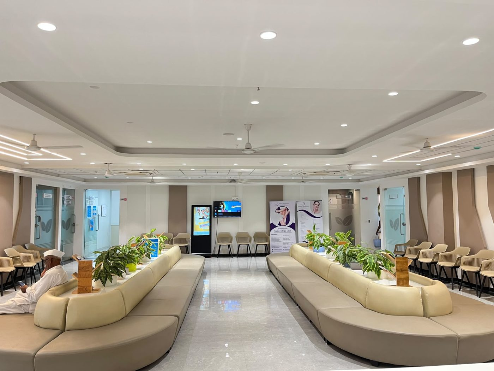

Acute fissure
A fresh tear with sharp pain. Often heals with softeners, ointment and sitz baths.
In short: Relief for the sharp, tearing pain of an anal fissure with ointments, Botox or a short procedure such as lateral sphincterotomy. After a private examination, we explain the right option for you.
Led by Dr. Abhijeet Suresh Shinde, General & Laparoscopic Surgeon and Consultant Proctologist.
An anal fissure is a small tear in the lining of the anal canal. It causes sharp, tearing pain during and after passing stools, and sometimes a streak of bright red blood.
Most acute fissures heal with stool softeners, ointments and warm sitz baths. Chronic fissures that keep coming back may need Botox or a short procedure such as lateral internal sphincterotomy.
A fresh, shallow tear. Usually heals in a few weeks with simple care.
Lasts beyond 6 to 8 weeks, with deeper edges and often a skin tag. Needs closer treatment.
Anal Fissure is not the same for every patient. Knowing which approach suits you helps us plan treatment properly.
A fresh tear with sharp pain. Often heals with softeners, ointment and sitz baths.
A long-standing tear with hard edges. Usually needs more than medicines.
The most common site, at the back of the anal canal, usually from hard stools.
Linked to another cause such as bowel disease, so it needs a closer look.
Bleeding with a change in bowel habit, weight loss or a fissure at an unusual site needs a full examination to rule out other causes.
Several conditions can feel alike. This comparison is a rough guide; only an examination can confirm the cause.
Still not sure which one it is? Symptoms overlap, and only an examination can confirm the cause.
Book a ConsultationA fissure forms when the lining of the anal canal tears, most often after passing a hard or large stool.
Spasm of the sphincter muscle then reduces blood flow and stops the tear from healing, so pain and bleeding continue.
Diagnosis is simple, quick and done in privacy. You are told what is being done at each step.
Pain pattern, bowel habits, diet and past treatments.
Gently parting the buttocks usually shows the fissure.
Kept brief and gentle because the area is tender; numbing gel may be used.
Proctoscopy or colonoscopy only if other causes are suspected.
A full internal examination is delayed if it is too painful, and done once the pain has eased.
The choice between non-surgical care and surgery depends on your findings, symptoms and health. This table is a guide, not a prescription.
| Stage | Usual first approach | When a procedure may be considered |
|---|---|---|
| Acute | Softeners, fibre, ointments, sitz baths | Pain persists beyond 6 to 8 weeks |
| Chronic | Ointment course or Botox injection | Fissure does not heal or keeps returning |
| Recurrent | Medical care plus habit correction | Procedure discussed after review |
| Severe spasm | Botox or sphincterotomy | Lasting relief is needed |
Many patients start with non-surgical care. It works best in the early stage, and Dr. Shinde starts here whenever it is safe and sensible.

Small daily changes make a big difference to treatment, and they also lower the chance of anal fissure returning.
Increase fibre slowly with extra water to avoid gas.

Surgery is advised for chronic fissures that do not heal with medicines or Botox. It is usually a short day-care procedure.
| Option | Suited to | Things to know |
|---|---|---|
| Lateral internal sphincterotomy | Chronic fissure with muscle spasm | Short; high healing rate; the risk to control is explained |
| Fissurectomy | Chronic fissure with scar tissue or skin tag | Removes the scarred tissue so the wound can heal |
| Advancement flap | Selected recurrent or complex cases | Used when other methods have not worked |
Botox can relax the sphincter temporarily so a chronic fissure can heal, without cutting the muscle.
Dr. Shinde offers modern options where they suit the patient and explains their limits honestly.
Private discussion and examination.
Tests only where needed.
Non-surgical or surgical, explained.
Done as day-care where possible.
Recovery checks and guidance.
Most patients feel pain relief within days of treatment. The wound takes a few weeks to heal fully, and good bowel habits protect the result.

Call us for heavy bleeding, fever, severe pain, trouble passing urine or stools, or if the pain returns.
Call NowSoft stools do not tear the lining.
Go when you feel the urge.
Avoid phones and long sitting.
Fix hard stools quickly.
Regular walking keeps bowels moving.
A small tear is easy to treat early. Left alone, it can turn into a long-standing wound.
A fresh tear can become a non-healing wound.
Pain and tight muscle feed each other.
A lump of skin may form at the edge.
Avoiding stools makes them harder.
They differ. A fissure is a tear; piles are swollen cushions.
Acute ones often heal, but chronic fissures usually need more.
The technique is chosen to protect control, and risks are explained.
With good bowel habits, most do not return.
Click “Know more” on a card to see the fact.
There is no single price for anal fissure in Kharadi, Pune. Your surgeon explains the likely cost after examination, once the best treatment is clear. Cost is explained before you decide, not after.
Consult Dr. Abhijeet Suresh Shinde for anal fissure at DISHA Advanced Surgical & Laser Piles Clinic.
General & Laparoscopic Surgeon and Consultant Proctologist with specialised training.
A track record in clinical and surgical experience.
We say when surgery is not needed, and we explain every option.
A calm clinic near Manipal Hospital, Thite Nagar, Kharadi.
Explained after examination and before you decide.

What patients have written about their visit to our clinic in Kharadi, Pune, shown as posted on Google.

DISHA Advanced Surgical & Laser Piles Clinic
1st Floor, OPD No. 2, Survey No. 22/2, Ganga Altus, F Building, Cherry Life, Near Manipal Hospital, Thite Nagar, Kharadi, Pune 411014
Daily: 10:00 AM – 9:00 PM
The tear exposes sensitive tissue and the muscle goes into spasm, which delays healing.
Many fissures heal with medicines. Surgery is reserved for chronic fissures that do not respond.
An acute fissure usually heals in a few weeks with care. Chronic ones take longer and may need a procedure.
It is used for selected chronic fissures, and its effect and limits are explained before treatment.
Yes. Every consultation and examination is private, respectful and judgement-free.
Call or WhatsApp +91 97668 15782, or use the online booking form. The clinic is open daily from 10 AM to 9 PM.
Cost depends on the treatment chosen. Your surgeon explains the likely cost after examination, before you decide.
Many procedures are done as day-care or a short stay, depending on your condition and fitness. Your surgeon will advise.
A short, private consultation with Dr. Abhijeet Suresh Shinde in Kharadi, Pune.
This page is general information and does not replace a personal medical opinion. Treatment decisions are made after examination.